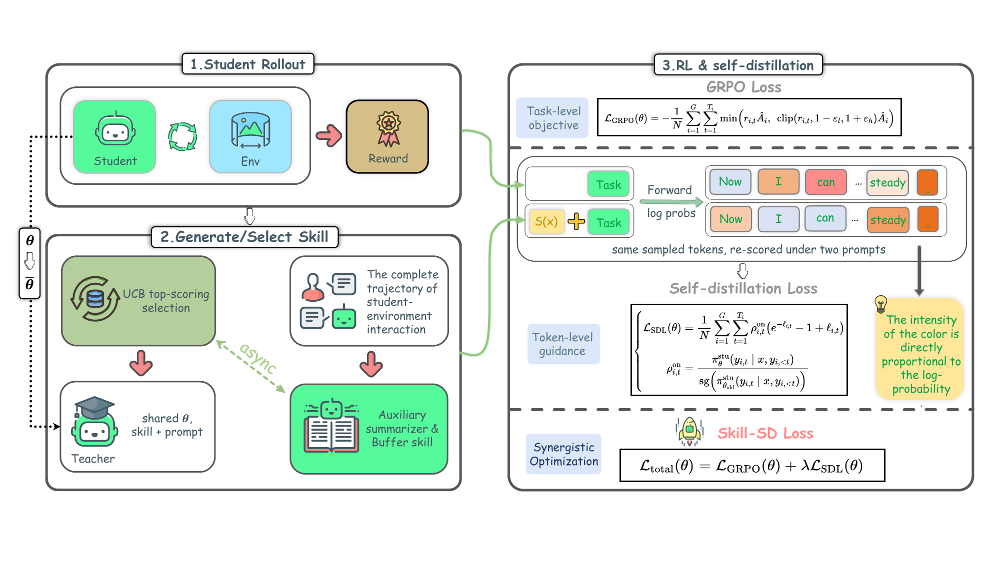
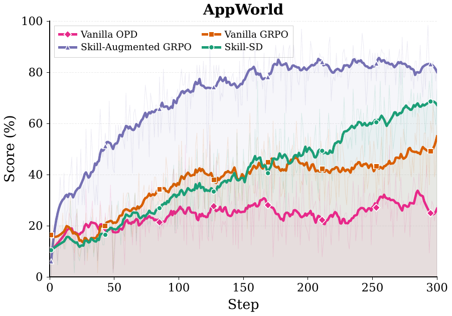
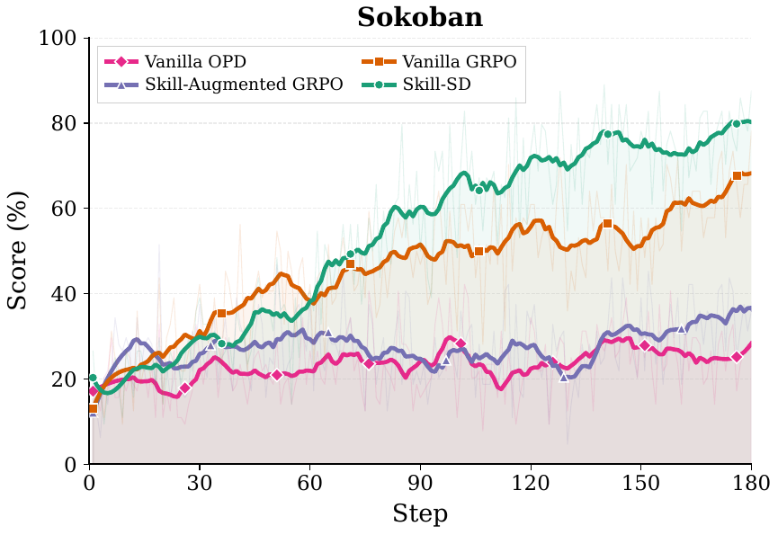
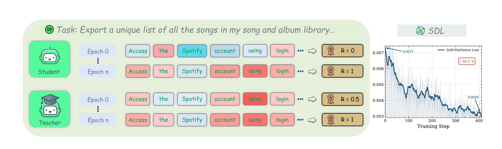

Dynamic Skill Summaries
Each completed trajectory is asynchronously summarized into a structured skill: success patterns, mistake analysis, and a golden workflow.
Skill-SD
Abstract
Reinforcement learning (RL) has been widely used to train LLM agents for multi-turn interactive tasks, but its sample efficiency is severely limited by sparse rewards and long horizons. On-policy self-distillation (OPSD) alleviates this by providing dense token-level supervision from a privileged teacher that has access to ground-truth answers. However, such fixed privileged information cannot capture the diverse valid strategies in agent tasks, and naively combining OPSD with RL often leads to training collapse. To address these limitations, we introduce Skill-SD, a framework that turns the agent's own trajectories into dynamic training-only supervision. Completed trajectories are summarized into compact natural language skills that describe successful behaviors, mistakes, and workflows. These skills serve as dynamic privileged information conditioning only the teacher, while the student always acts under the plain task prompt and learns to internalize the guidance through distillation. To stabilize the training, we derive an importance-weighted reverse-KL loss to provide gradient-correct token-level distillation, and dynamically synchronize the teacher with the improving student. Experimental results on agentic benchmarks demonstrate that Skill-SD substantially outperforms the standard RL baseline, improving over vanilla GRPO by 14.0/10.9 points on AppWorld/Sokoban and over vanilla OPD by 42.1/40.6 points, with consistent paired-seed gains using self-written skills on ALFWorld.
Contributions
Each completed trajectory is asynchronously summarized into a structured skill: success patterns, mistake analysis, and a golden workflow.
Skills augment the teacher's prompt only. The student always operates under a clean task prompt, eliminating train-test mismatch.
An importance-weighted reverse-KL loss corrects per-token gradient bias caused by teacher and student distribution mismatch.
Method
The student generates rollouts using only the task prompt — no distilled skills — preserving identical train/test conditioning.
An auxiliary LLM (or frozen copy of the student) compresses each episode into a reusable skill summary of successes, failures, and workflow.
Retrieved skills go only to the teacher, which re-scores the trajectory token by token — student inputs stay unchanged.
GRPO handles trajectory-level reward; importance-weighted reverse-KL distills token-level guidance and corrects teacher-student mismatch.
Pipeline

Skill Representation
Skill-SD does not archive full trajectories as supervision. Each completed attempt is compressed into a compact teacher-only JSON artifact that records what to reuse, what to avoid, and what the next best rollout should do.
skill.json
Open-Weight Evaluation Suite
To test writer capacity, explicit skill prompting, alternative privileged contexts, distillation weight sensitivity,
and end-to-end training cost under a fully open-weight protocol, we evaluate Skill-SD on ALFWorld across
two backbones (Qwen3-4B-Instruct-2507 and Qwen2.5-3B-Instruct) and paired random seeds.
A frozen copy of each student writes the skills — no external frontier model is required.
Qwen3-4B · Paired Seeds
+14.1 / +14.0 pts
Over Vanilla GRPO on seeds 43 & 44 (75.8% vs. 61.7% and 69.5% vs. 55.5%) with self-written skills.
Qwen2.5-3B · Paired Seeds
+8.6 / +13.3 pts
Self-written skills reach 85.2% & 82.8% vs. 76.6% & 69.5% for GRPO across paired seeds.
Skill Placement
75.8% vs. 53.9%
Teacher-only SDL beats Skill-Augmented GRPO (53.9%) and Matched Skill Prompting (14.8%).
Measured Overhead
+4.9% Wall-Clock
Teacher re-scoring takes 23.3 s (7.5%/step); +5.3% per step and +13.7% amortized GPU-hours on 8× H200.
Every row shares the same seed, initial policy, and 128 held-out valid_seen games.
Self-written skills improve over Vanilla GRPO in all four paired runs; swapping the 3B self-writer for
DeepSeek-V4-Flash yields mixed results across seeds (+3.9 pts on seed 43, −7.0 pts on seed 44).
| Student Backbone | Seed | Vanilla GRPO | Skill-SD (Self-Writer) | Gain vs. GRPO | Skill-SD (DeepSeek-V4-Flash) |
|---|---|---|---|---|---|
| Qwen3-4B-Instruct-2507 | 43 | 61.7% | 75.8% | +14.1 pts | — |
| Qwen3-4B-Instruct-2507 | 44 | 55.5% | 69.5% | +14.0 pts | — |
| Qwen2.5-3B-Instruct | 43 | 76.6% | 85.2% | +8.6 pts | 89.1% (+12.5) |
| Qwen2.5-3B-Instruct | 44 | 69.5% | 82.8% | +13.3 pts | 75.8% (+6.3) |
On Qwen3-4B-Instruct-2507 (seed 43), only teacher-side conditioning with compact, task-relevant skills
outperforms Vanilla GRPO. Explicit policy prompting, raw retrieved trajectories, and cross-family skills all fall short.
| Training Configuration | Eval Skills | Success | vs. GRPO |
|---|---|---|---|
| Skill-SD (Ours) | No | 75.8% | +14.1 |
| Vanilla GRPO | No | 61.7% | — |
| SDL + Retrieved Trajectory | No | 59.4% | −2.3 |
| Skill-Augmented GRPO | No | 53.9% | −7.8 |
| SDL + Cross-Family Skills Only | No | 44.5% | −17.2 |
| Matched Skill Prompting | Yes | 14.8% | −46.9 |
We sweep the SDL coefficient λ and benchmark wall-clock and GPU-hour overhead on the paired
Qwen3-4B-Instruct-2507 (seed 43) run using 8× H200 GPUs.
| λ | 3×10−4 | 10−3 (default) | 3×10−3 | 10−2 |
|---|---|---|---|---|
| Success (Step 150) | 50.8% | 75.8% | 56.2% | 0.0% (collapse) |
| Quantity (8× H200, Seed 43) | GRPO | Skill-SD | Overhead |
|---|---|---|---|
| Pure training step (135-step avg.) | 294.5 s | 310.2 s | +5.3% |
| Total wall-clock time | 13.22 h | 13.87 h | +4.9% |
| Amortized end-to-end GPU-hours* | 105.76 | 120.21 | +13.7% |
Teacher re-scoring (23.3 s, 7.5% of a step): A single forward pass over student-sampled tokens with no teacher rollout or environment interaction.
Asynchronous shared writer*: A frozen 4-GPU vLLM writer serves 6 concurrent runs (amortized 4/6 GPU per run), overlapping summarization latency with rollout and gradient updates. A dedicated writer increases GPU-hours.
Additional Benchmarks
Model: Qwen3-4B-Instruct-2507 (Seed1.8 skill writer; single run per method; 57 AppWorld dev tasks & 64 Sokoban test levels).
Subscripts denote absolute change from the base model.
| Method | AppWorld | Sokoban | Avg. | |||
|---|---|---|---|---|---|---|
| Acc. | Comp. | Acc. | Comp. | Acc. | Comp. | |
| Base Model | 8.8% | 39.1% | 12.5% | 32.0% | 10.6% | 35.6% |
| Vanilla OPD | 22.8%+14.0 | 59.7%+20.6 | 21.9%+9.4 | 37.5%+5.5 | 22.4%+11.7 | 48.6%+13.0 |
| Vanilla GRPO | 50.9%+42.1 | 76.3%+37.2 | 51.6%+39.1 | 68.8%+36.8 | 51.2%+40.6 | 72.5%+36.9 |
| Skill-Augmented GRPO | 42.1%+33.3 | 76.1%+37.0 | 20.3%+7.8 | 37.5%+5.5 | 31.2%+20.6 | 56.8%+21.2 |
| Skill-SD (Ours) | 64.9%+56.1 | 84.9%+45.8 | 62.5%+50.0 | 71.1%+39.1 | 63.7%+53.1 | 78.0%+42.4 |


Student-owned on-policy rollouts prevent mid-training collapse, and dynamic teacher synchronization adds
+15.8 pp on AppWorld and +12.5 pp on Sokoban over a frozen teacher.
Consistent with ALFWorld, λ = 10−3 achieves the best AppWorld validation completion (81.19%).
Subscripts denote absolute change from Skill-SD. *Training collapsed mid-run; values reflect the last pre-collapse checkpoint.
| Rollout | Teacher | AppWorld Acc. | AppWorld Comp. | Sokoban Acc. | Sokoban Comp. | Avg. Acc. |
|---|---|---|---|---|---|---|
| On-policy | Dynamic (Skill-SD) | 64.9% | 84.9% | 62.5% | 71.1% | 63.7% |
| On-policy | Frozen | 49.1%−15.8 | 79.0%−5.9 | 50.0%−12.5 | 63.3%−7.8 | 49.6%−14.1 |
| Off-policy* | Frozen | 45.6%−19.3 | 78.8%−6.1 | 12.5%−50.0 | 31.3%−39.8 | 29.1%−34.6 |
| Off-policy* | Dynamic | 42.1%−22.8 | 76.5%−8.4 | 10.9%−51.6 | 32.0%−39.1 | 26.5%−37.2 |

Citation
@inproceedings{wang2026skillsd,
title={Skill-{SD}: Skill-Conditioned Self-Distillation for Multi-turn {LLM} Agents},
author={Hao Wang and Guozhi Wang and Han Xiao and Yufeng Zhou and Yue Pan and Jichao Wang and Ke Xu and Yafei Wen and Xiaohu Ruan and Xiaoxin Chen and Honggang Qi},
booktitle={The Fortieth Annual Conference on Neural Information Processing Systems},
year={2026},
url={https://openreview.net/forum?id=ZeThM3k7x0}
}